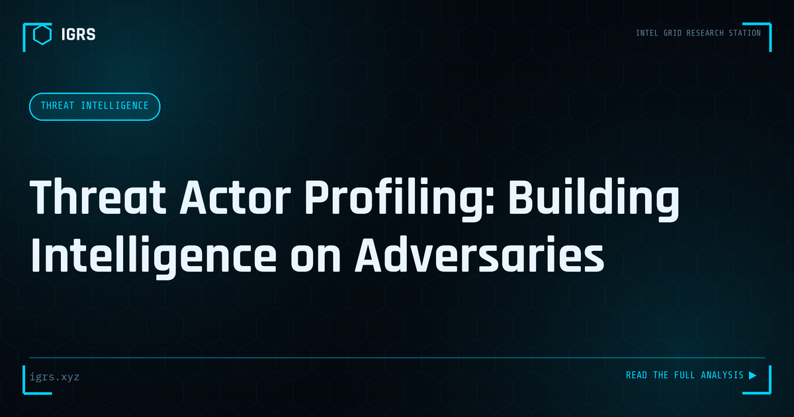

Threat Actor Profiling: Building Intelligence on Adversaries
| File No. | IGRS-041/2026 |
| Subject | Methodology for threat actor research, attribution assessment, and profile construction |
| Category | Threat Intelligence |
| Author | Manuj Kumar Pandey |
| Published | 2026-04-09 |
| Reading time | 12 minutes |
Knowing who is targeting your organization — tools, techniques, motivation, history — fundamentally changes how you defend. How threat actor profiles are built and used.
Threat Actor Profiling: Knowing Your Adversary
Effective cyber defence requires understanding who is attacking, how they operate, and why. Threat actor profiling builds this understanding — characterising adversaries by their tactics, techniques, motivations, and infrastructure. This intelligence enables prediction, attribution, and targeted defence. For security teams and investigators, profiling transforms faceless attacks into understood adversaries. This guide explains threat actor profiling methodology.
Types of Threat Actors
| Actor Type | Motivation | Typical Targets |
|---|---|---|
| Nation-state / APT | Espionage, disruption | Government, critical infra, defence |
| Cybercriminals | Financial gain | Banks, businesses, individuals |
| Hacktivists | Ideological | Government, corporations |
| Insiders | Grievance, gain | Their own organisation |
| Script kiddies | Notoriety, curiosity | Opportunistic targets |
What Goes Into a Profile
A threat actor profile assembles multiple dimensions: the actor's tactics, techniques, and procedures (TTPs), their typical targets and objectives, their tools and malware, their infrastructure, their skill level and resources, and their motivations. Together these create a characterisation that enables defenders to recognise the actor, anticipate their behaviour, and tailor defences specifically against them.
TTPs: The Behavioural Fingerprint
Tactics, techniques, and procedures form the core of profiling because they are relatively stable. While an actor easily changes infrastructure like IP addresses, their fundamental methods — how they gain access, escalate privileges, move laterally, and exfiltrate data — change more slowly. The MITRE ATT&CK framework catalogues these TTPs, providing a common language for characterising and recognising actors by their behavioural fingerprint.
Attribution: The Hardest Challenge
Attributing an attack to a specific actor is notoriously difficult and rarely certain. Attribution analyses TTPs, malware signatures, infrastructure reuse, language and timezone artifacts, targeting patterns, and code similarities. However, sophisticated actors deliberately plant false flags and mimic others to mislead. Responsible attribution combines technical indicators with intelligence context, expresses appropriate confidence levels, and avoids overconfident claims.
Profiling Frameworks
| Framework | Purpose |
|---|---|
| MITRE ATT&CK | Cataloguing adversary TTPs |
| Diamond Model | Analysing intrusion relationships |
| Cyber Kill Chain | Mapping attack stages |
These frameworks structure profiling analysis, ensuring comprehensive and consistent characterisation. The Diamond Model, for instance, analyses the relationships between adversary, capability, infrastructure, and victim, revealing patterns that aid both profiling and attribution.
Infrastructure Analysis
An actor's infrastructure — their servers, domains, and tools — provides profiling insights. Reuse of infrastructure across attacks links them to the same actor. Patterns in how infrastructure is registered, configured, and operated form part of the actor's signature. Tracking infrastructure through passive DNS, certificate analysis, and threat intelligence reveals an actor's operational footprint and connections between seemingly separate campaigns.
Motivation Analysis
Understanding why an actor attacks shapes defence. Financial motivation suggests targeting of valuable data and systems; espionage suggests patient, stealthy access for intelligence; ideological motivation suggests high-profile, disruptive targets. Motivation also predicts behaviour — a financially motivated actor behaves differently from a nation-state seeking long-term access. Profiling motivation helps defenders anticipate what an actor will target and how they will operate.
Threat Actor Profiling in India
For Indian organisations, profiling includes understanding the actors that specifically target India — nation-state groups conducting espionage against government and critical infrastructure, financially motivated groups targeting India's banking and digital payment systems, and the fraud syndicates behind the country's pervasive cyber fraud. India-specific threat intelligence, including CERT-In advisories, helps build profiles relevant to the actual adversaries Indian organisations face.
Using Profiles for Defence
The value of profiling lies in application. Profiles inform threat hunting (searching for a known actor's TTPs), prioritise defences (against the techniques actors actually use), enrich incident response (with context about the likely adversary), and guide strategic security investment. A profile that sits unused provides no value; the goal is to translate understanding of the adversary into concrete defensive action.
Building Profiling Capability
Threat actor profiling combines threat intelligence, TTP analysis using frameworks like MITRE ATT&CK, infrastructure tracking, and motivation assessment. For Indian security teams and investigators, developing this capability — understanding not just that attacks happen but who conducts them and how — enables proactive, targeted defence. In a threat landscape of diverse and determined adversaries, knowing your enemy is the foundation of defending against them effectively, making threat actor profiling an increasingly vital intelligence discipline.